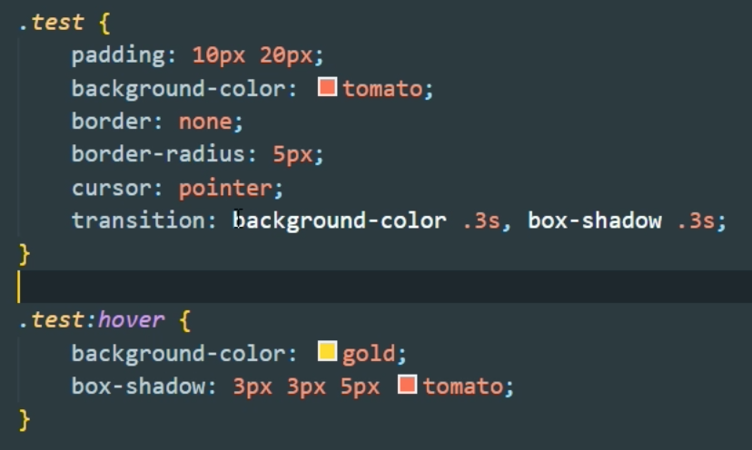

DOBRE PRAKTYKI PISANIA KODU
LINK
DO UDEMY
- Odpowiednia struktura HTML
- RWD
- Dbanie o czystość w kodzie
- usuwać zbędne odstępy w kodzie
- odpowiednie wcięcia w kodzie
- ustawianie właściowości w selektorach w css
- pozycjonowanie elementu czyli na górze position, potem top, left itd, następnie
transform
- wymiary elementu - display, wyskosc, szerokosc itd
- stylizowanie czyli bgc, kolory, bordery, shadowy itd
- dodatkowe czyli transition, cursor, animation itd
- nazywanie slektorów (przykład zły "btn1" luib "btn1", przykład dobry "btn-start" lub
"btn-share")
- komemntarze (dobry pomysł to opisywanie kometarzami sekcji na stronie)
- BEM (blok element modifier- metodologia, która pozwala pisać lepszy kod, składający się z różnych
komponentów. Przeażnie przy większych projektach, gdy np pracujemy w grupie
Link
do Udemy
Stropna oficjalna metodologii BEM getbem.com
- Ustawić na stałe font w tagu html, a potem ustalać wielkość fontó∑ poprzez "rem". Pomaga to tworzyć
strony responsywne
- Podstrony które się uzupełniają odpowiednio (np manu się zmienia na wszystkich, czy footer itd tworzymy
nastepująco
- tworzymy plij js z odpiwiednim skryptem
- na dole strony strony od razu nad tagiem "/body" podajemy dwa skrypty
jeden tworzymy srcipt:scr do pliku .js
drugi script do wywyoływania funkcji z tego skryptu
- tworzymy pliki html odpowiednie pod nasze np footer lub nav itd
- ww odpowiednich miejscach strony wklejasz diva z odnosnikiem do danego pliku html (np
footer.html czy nav.html
- FILM
na UDEMY JAK TO ZROBIĆ
- LINK DO W3SCHOLS
- Ustawienia pod rensponsywność
- // Small devices (landscape phones, 576px and up)
@media (min-width: 576px) { ... }
- // Medium devices (tablets, 768px and up)
@media (min-width: 768px) { ... }
- // Large devices (desktops, 992px and up)
@media (min-width: 992px) { ... }
- // Extra large devices (large desktops, 1200px and up)
@media (min-width: 1200px) { ... }
- Aby obszer klikalnhy był większy, należy dodać padding
- Jeżeli coś wystaje poza box dodajemy overflow:hidden
- Wielkość zdjęć pod daną wielkość ekranu
- OPTYMALIZACJAudemy
BARDZO
WAŻNA DLA OPTYMALIZACJI jest żeby stylować przez transform i opacity szczegółowo
na udemy
Jednostki
px - ustala szerokość lub wysokość obiektu w pikselach
% - ustawia szerokość lub wysokość obiektu procentowo w stosunku do szeroko
vh - ustala
wysokość strony i procentowo ustawia szerokość lub wysokość obioektu
vw - ustala szerokość sstrony i procentowo ustawia szerokość lub wysokość obioektu
rem - jenostka dla fontów - ustawia wielkość fontu jako iloczyn wielkości fontu ustalonego w
najważniejszym tagu (html) lub pseudoklasie (:root)
em - jenostka dla fontów - ustawia wielkość fontu jako iloczyn wielkości fontu ustalonego w
"rodzicu"
Układ CSS
- linki zewnętrze
- nasz plik CSS
- tag style
- style liniowe (w tagach)
Ważność w CSS (selektory)
- styl liniowy
- ID
- klasy
- tag HTML
Jest jeszcze opcja !important oraz pseudoklasa :root
Kombinator ">" w CSS (np "div > P") odwołuje się tylko do bezpośrednio zagnieżdzonych elementów, pomija kolejne
zagnieżdżenia (w tym przykładzie do paragrafów bezpośerdnich dzieci diva )
Kombinator "+" w CSS (np "div + P") odwołuje się do elementu następującego po danym elemencie (wg tego przykładu
pierwszy P po DIV będzie stylizowany, ale tylko jeśli jest od razu po divie i na tym samym poziomie
(rodzeństwo))
Kombinator "~" w CSS (np "div ~ P") podobnie jhak z plusem ale odwołuje się do wszystkich elementó następujących
po danym elemencie(wg tego przykładu wszystkie P po DIV będzie stylizowany, jeżeli są na tym samym poziomie
(rodzeństwo))
Box model - modelowanie boxów
LINK
DO UDEMY
"box-sizing: content-box" - element rośnie razem z dodawanymi paddingami iborderami
"box-sizing: border-box" - wielkość elementu ustalowa nie zmienia się podczas zmianm paddingów i borderów.
Zmienia się wnętrze contentu

Usuwa tekst albo dodaje scrola jesli tekst nie mieści się w elemencie
overflow: hidden; - ukrywa tekst ktory sie nie miesci
overflow: auto; - dodaje scrolla do przewijanis
text-decoration: none; usuwa stylizowanie
a:link; - link nie klikany
a:visited; - link kliknięty
a:hover; - podświetlanie linku podczas najeżdzania kursorem
a:active; - klikany link (podczas wciskania)
WAŻNE!! Zachować kolejność tak jak podana powyżej podczas stylizowania (bez względu na to z której kpseudoklasy
korzystamy)
pseudoklasa
:hover - odpowiada za to co dzieje się podczas najeżdzania kursorem na obiekt
transition - określa czas w którym ma się akcja wykonać, można animować konkretne wlaściwości (np:
transition: background-color 3s, box-shadow 3s)

UKRYWANIE I POJAWIANIE SIĘ ELEMENTÓW
LINK
DO UDEMY
w tym samym filmie co stylizowanie buttonów
Przykład 1
podczas najeżdzania na jakiś element znika inny elememnt
8:30 w filmie
ELEMENT:hover [KOMBINATOR] ELEMENT
np: span: hover + div (najeżdzasz na span a pojawia sie div ktory jest bezposrednim rodzenstwem)
Przykład2
podczas najeżdzania obiekt zmienia właściwości np. przy menu
div{
width: 50px;
height: 50px;
transition: .3s;
}
div:hover{
width: 400px;
height:1000px;
}
Display inline, inline-block oraz block
LINK
DO UDEMY
Wielkość mnożna zmieniać tylko elementom blokowym (np. div p), a elementom liniowym nie m ożna zmieniać .
Wyjątkiem jest IMG. Jest to obiekt liniowy, ale można go modelować.
display: block - zmienia obiekt liniowy w blokowy (np. span zachowuje sie jak obiekt blokowy)
display: inline-block - obiekt zachopwuje się jak blokowy ale układa się liniowo (mozna np ustawic spany
jako blokowe ale ustawic je obok siebie
displahy: inline -
W POSITION przy określaniu pozycji możemy się odwoływać do 4 właściowosci czuli TOP;RIGHT;BOTTOM;LEFT oraz osi Z
czyli "z-index". Używamy tylko dwóch wlasciowosc (mnp left i bottom) to logiczne
relative - przy relative ustalamy o ile przesuwamy element ale względem jego oryginalnej pozycji
abslotute - ustalamy pozycję elementu względem najbliższego rodzica który, ma ustalony position
(relative liub
absolute) aż do BODY
fixed- ustalamy pozycję względem okna przeglądarki. WAŻNE!! niektóre właściwości CSS w połączeniu z
"postgion: fixed" wyłączająm lub zakłucają działanie fixed.
sticky - taki fixed tylko ze fajniejszy. Obiekt wisi w obekcie w którym się znajduje na swoim miejscu a
jeśli ruszymy stroną to przesuwa się razem z rodzicem ale zatrzymuje się w stosun ku do strony . Jeśli jednak
rodzic się chowa to obiekt ze sticky chowa się razem z nim
Świetnie to opisano w tym filmie LINK DO UDEMY
Przyskład zastosowania sticky

static - podstawowa wlasciowosc obiektow
MOŻNA WYŚRODKOWAĆ ELEMENT
Ufunkcja calc
przykład wysrodkowania jednego elementu w lini:
position:absolute;
left: calc(50% - (połowa szerokości obiektu)px)
LUB
tranformem
ustawiamy np. position:absolut top:50% left:50% i transform: translate(-50%, -50%)
podczas pisania kodu między blokami czasem pojawia się odstep, spowodowanmy tym ze kolejne linie tekstu sa w
nastep[nych liniach. trzeba wtedy utawic na rodzicu "font-size:0"
np. transition: .3s - wersja skrócona
transition: all 0s ease 0s;
br
szczegółowo
transition-property: all - jakie właściwości danego obiektu animujemy (może być kilka np. width .3s,
color .9s
itd)
transition-duration: 0s - jak długo animacja bnędzie trwałą
transition-timing-funtion: ease - jest klika rodzajów. Automatycznie ustwaiany jest "ease", ale są
również inne. Najlepiej potestować albo zerknąć na film po tym linkiem
transition-delay: 0s - opóźnienie (można wywoływać anmacje z opóźnieniem
Mamy 4 podstawowe właściwości oraz np. transform: prespecite / matrix które służą do przekształcania
transform: translate - przesuwanie elementu względem osi x i y.
ZA POMOCĄ TRANSFORN:TRANSLATE
WYŚRODKOWYJEMY ELEMENTY NA STRONIE.
ustawiamy np. position:absolut top:50% left:50% i transform: translate(-50%, -50%)
transform: scale - służy do zmiany wielkości elementu
transform: rotate przekształca obiekt (obraca, pochyla) względem osi x,y,z. Podajemy w stopniach "deg".
np "tranform:rotateY(180deg)
ransform: scew - pochyla (np robi romb z kwadrata) względem ozi x i y. Też podajemy w stopniach
(deg)-
TRANSFORM ORIGIN - usgtalamy punkt względem którego będzie animowany obiekt (domyślnie ustawiony jest na (50%
50%))LINK
background: -
background-color -
background-image - Mozemy podać odnośnik do obrazka lub zastosować gradient. Można nakłądać warstwy,
czyli kilka obrazów albo gradientów jedno na drugim
background-repeat - standardowo ustawione na repeat. Można zmienić na no-repeat czyli obraz nie będzie
powtarzany. Sa jeszcze inne.
background-position - ustawianie pozycji tła. Można podać wartości dla osi X i y, lun ustalić na top, left,
center itd
background-size - wartość contain skaluje bcg do szerokści strony, auto to wielkość org, cover
rozciaga
background-attachment -
wartość scroll - w obiekcie czcionka sie przewija ale tło stoi, i gdy przesuwamy stronę tło porusza się
razem z czcionką
wartość fixed -w obiekcie czcionka sie przewija ale tło stoi, ale gdy przesuwamy stronę tło stoi a czcionka
się porusza
wartość local -
RWD - Responsice Web Design
LINK
DO UDEMY
Tworzeni stron responsywnych czyli dostosowanych do różnych urządzeń np desktopów i mobilnych
WAŻNE HASŁA i INFORMACJE:
Pixel Pixelowi nie równy (mimo ze nasze telefonu maja fullhd czy 4k to co innego niż fhd czy 4kna monitorze)
metatag viewport - dzięki niemu stronu dostosowują się do ekranu
Mobile FIRST - stronę zawsze zaczynamy budować od wersji mobilne
LINK
DO UDEMY DLACZEGO MOBILE FIRST JEST TAKIE WAŻNE
Mamy tryb landscape (szersdzy niz wyzszy) i portrait (ekran wezsz niz wyszszy)
@media queries
link
do udemhy
link do mdn
Link do mdn wersji angiejskiej, są tam
opisanem różne ficzery
ZMIENNE
zmienne zapisujemy na górze pliku CSS w pseudoklasie ":root"
nazwę z zmiennej zapisujemy poprzedzając "--" (example:"--first-color: white")
do zmiennej odwołujemy się wpisując jako wartość właściowosci "var(--nazwa zmiennej)"
(example:"var(--first-color"))
zmienne w .sass na tej stronie Ściąga SASS
pseudo klasy i pseudo elementy
klasa w css - ".nazwa-klasy"
pseudoklasie ":nazwa-pseudo-klasy"
pseudoelement - "::nazwa-pseudo-elementu"
link
do udemy
PSEUDO KLASY
LINK DO MDN
:first-child - odnosi się do pierwszego dziecka i jesli jest danym elementem to go stylizuje
:last-child - - odnosi się do ostatniego dziecka i jesli jest danym elementem to go stylizuje
:first-of-type - odnosi się do pierwszego z tego typy w każdym elememncie
:last-of-type - odnosi się do ostatniego z tego typy w każdym rodzicu
:nth-child(liczba-nr dziecka) - odnosi się do dziecka o nr podanym w nawiasie. mozliwe rowniez wartości
(odd-nieparzyste, even-parzyste, wielokrotniość np 3n-czyli 3*n, mozna tez podac w nawiasie np (3n+1)
np. 2n=2 * n
n = 0 do nieskonczonosci
:nth-last-child(liczba-nr dziecka) - to samo co ":nth-child" tylko liczone od tyłu
:nth-of-type(liczba-nr dziecka) -
:nth-last-child(liczba-nr dziecka) -
poczytać o różnicach w necie
PSEUDO ELEMENTY
LINK DO MDN
::after - dodajemy właściwość "content" i po elemencie pojawia się wartość liniowo, którą możemy również
stylować. Dodaje się to wewnątrz elementu (nie można tej treści zaznaczyć jak tekstu)
Można np w divie dodać
pusty content, ustawić display block, ustwaić jego wwymiary i pojawi się taki element wewn tego diva
::before - to samo co ::after tylko przed elementem
Atrybuty
link
do udemy
Atrybuty służą do dowołania się do konkretnego atrybutu. Wpisujemy to w "[]".
exaple: [href] lub
[href='cnn.com']
other examples
[class='nazwa-klasy']
[class*='test'] dodając "*" przed rownasię będziemy wyszukiwać np klasy w której zwaratość jest ciąg znaków
"test", nawet gdy nazwa klasy to bedzie np "test-435" lub "44testuu"
p[class*='nazwa-klasy'] przeszukuje klase ale tylko w paragrafach
Można korzysztać z innych selektorów niż "*".
Pomocny link na css-tricks.com
Animacje
link
do udemy
Reguła @keyframes
link
do udemy
Służy do precyzyjnej kontroli nad przebiegiem animacji
dodatkowe
informacje
Tworzymy regułę keyframes. Potem w danym elememncie odwołujemhy się do tego poprzez właściwość animation.
W animation najwążniejsz edwie pierwsze właściwości to nazwa animacji do które się odwołujemy (keyframes)
oraz czas trwania. Potem możemy stosować kilka dodatkowych opisanych tu mdn tu w
pl kurshtmlcss.pl
animation: nazwa / czas / timing-funktion / delay / il. powtórzeń / fill mode
Można podać keyframes w dwóch breakpointach "from" i "to" zamiast 0% i 100%.
właściwość fill-mode - określia w jaki sposób interesujący nas element HTML może otrzymywać
dodatkowe właściwości CSS od animacji, którą posiada. Mowa tu o momencie, gdy animacja elementu HTML nie
rozpoczęła się jeszcze wykonywać lub gdy animacja elementu HTML zakończyła już swoje wykonywanie się.
webkod.pl
udemy